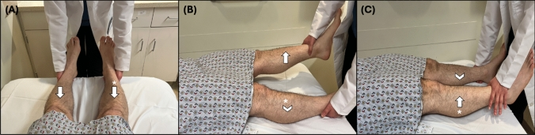
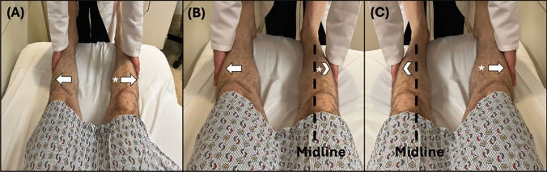
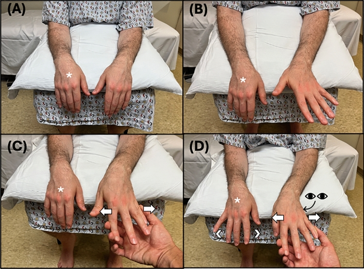
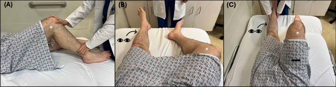
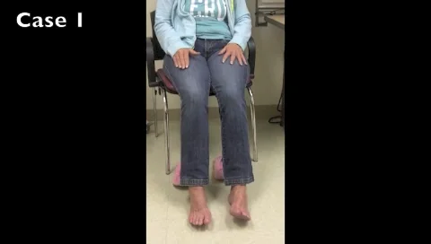

- Tanım, tarihçe ve tanı ölçütleri
- Epidemiyoloji, etiyoloji ve patofizyoloji
- Muayenede pozitif bulgular
- Fonksiyonel güçsüzlük
- Fonksiyonel tremor ve diğer hareket bozuklukları
- Yürüme bozukluğu ve duyu bulguları
- Fonksiyonel (dissosiyatif) nöbetler
- Ayırıcı tanı ve uyarıcı bulgular
- Tanının hastaya açıklanması ve tedavi
- Olgu örnekleri
Fonksiyonel Nörolojik Bozukluk
Tanı, muayene bulguları ve tedavi yaklaşımı
HazırlayanDr. Onur Gökmen
Balıkesir Üniversitesi Tıp Fakültesi
Ruh Sağlığı ve Hastalıkları Anabilim Dalı
Sunum Planı
Tarihçe
- 1880’ler: Charcot, Salpêtrière’de histeriyi nörolojik bir hastalık olarak inceledi
- 1895: Breuer ve Freud, “Histeri Üzerine Çalışmalar”; konversiyon kavramı
- 1908: Charles F. Hoover, kendi adıyla anılan bulguyu tanımladı
- 1980: DSM-III ile “konversiyon bozukluğu” tanısı
- 2013: DSM-5; psikolojik stresör ölçütü kaldırıldı, tanı pozitif muayene bulgularına dayandırıldı
- 2019: ICD-11; “dissosiyatif nörolojik semptom bozukluğu”
Stone ve ark., Clin Med 2021
Tanım ve Terminoloji
| Terim | Bağlam | Klinikte nasıl kullanmalı |
|---|---|---|
| Histeri · konversiyon | Tarihsel; psikanalitik köken | Mekanizma varsayımı taşıdığı için tanı adı olarak kullanılmaz; eski kayıtları okurken bilin |
| “Psikojenik”, “organik olmayan” | Eski nöroloji dili | Hastayı damgalar; “organik” karşıtlığı yanlış ikilem kurar |
| Fonksiyonel nörolojik semptom bozukluğu (konversiyon bozukluğu) | DSM-5-TR | Klinik bulgular semptomla bilinen nörolojik durumlar arasındaki uyumsuzluğu gösterir; psikolojik stresör zorunlu değildir |
| Dissosiyatif nörolojik semptom bozukluğu | ICD-11 | Dissosiyatif bozukluklar altında sınıflanır; aynı klinik tablo |
| Fonksiyonel nörolojik bozukluk (FNB / FND) | Klinik ve araştırma dilinde şemsiye | Hastaya da söylenebilen, mekanizma varsaymayan terim |
| Fonksiyonel (dissosiyatif) nöbet | PNES / “psikojenik non-epileptik nöbet” yerine | Epileptik olmayan, fonksiyonel nöbet alt tipi |
FNB istemli üretilmez. Yapay bozukluk (factitious) ve temaruz (malingering) ayrı kavramlardır ve ayrı tanı gerektirir.
DSM-5-TR · ICD-11 · Stone 2021
Tanı Ölçütleri (DSM-5-TR)
- A. İstemli motor ya da duyu işlevlerinde değişiklik gösteren bir veya daha fazla belirti
- B. Klinik bulgular, belirti ile bilinen nörolojik ya da tıbbi durumlar arasındaki uyumsuzluğu gösterir
- C. Belirti başka bir tıbbi ya da ruhsal bozuklukla daha iyi açıklanamaz
- D. Belirgin sıkıntıya ya da işlevsellikte bozulmaya yol açar veya tıbbi değerlendirme gerektirir
- Belirleyiciler
- Belirti türü: güçsüzlük/felç, anormal hareket, yutma, konuşma, nöbet, duyu kaybı, özel duyu, karma
- Akut epizod (6 aydan kısa) ya da süregen
- Psikolojik stresör eşlik ediyor ya da etmiyor
Amerikan Psikiyatri Birliği, DSM-5-TR, 2022
Epidemiyoloji
- Nöroloji polikliniğine yeni başvurularda en sık ikinci tanı grubu
- İskoçya, 3781 hasta: baş ağrısı %19, fonksiyonel ve psikolojik belirtiler %16, epilepsi %14
- İnme ünitesine yatışların %8,4’ü fonksiyonel inme taklidi
- Londra, 1165 yatış; ortalama yaş 49 (inmede 71), %63 kadın
- En sık başvuru: güçsüzlük ve konuşma bozukluğu
- Kadınlarda daha sık; her yaşta görülebilir
- Yapısal nörolojik hastalıkla birlikte bulunabilir
Stone ve ark., Clin Neurol Neurosurg 2010 · Gargalas ve ark., JNNP 2017
Tanının Güvenilirliği
Yanlış tanı oranları
- Konversiyon tanısı alanlarda sonradan başka hastalık çıkma oranı 1970’lerden beri ortalama %4
- Veri: 27 çalışma · 1466 hasta · ortanca izlem 5 yıl
- Düşüş, tanısal doğruluktaki artıştan çok çalışma kalitesindeki artışa bağlanmıştır; BT’nin yaygınlaşması tek başına açıklamaz
İzlemde yeni bulgu ortaya çıkarsa tanı yeniden değerlendirilmelidir.
Yanlış tanı oranı (%, ortalama)
%29
1950’lerGA 23–36%17
1960’larGA 12–24%4
1970’lerGA 2–7%4
1980’lerGA 2–6%4
1990’larGA 2–6Stone ve ark. BMJ 2005 · çubuklar ortalamayı, GA %95 güven aralığını gösterir.
BMJ 2005 · J Neurol 2025
Etiyoloji
| Yatkınlaştırıcı etkenler | Tetikleyici etkenler | Sürdürücü etkenler |
|---|---|---|
|
|
|
Sürdürücü etkenler değiştirilebilir; tedavi öncelikle bu etkenlere yönelir.
Stone 2021 · Hallett Lancet Neurol 2022
Patofizyoloji
Önceki beklentiler“Bacağım çalışmıyor” gibi güçlü içsel tahmin (prior)
+
Öz-odaklı dikkatVücuda yönelince tahminin ağırlığı artar
→
Duyusal kanıtın etkisi azalırHareket ve duyu kanıtı tahmini düzeltemez
→
Eylem duygusu bozulurHareket “benden bağımsız” yaşanır (ajans)
→
Fonksiyonel semptomGüçsüzlük, tremor, nöbet, duyu
Muayeneye yansıması
- Dikkat başka göreve kayınca tahminin ağırlığı düşer; Hoover, entrainment ve dikkat dağıtma bu yüzden çalışır
- Bulgu, istemli ve otomatik motor kontrol arasındaki farkı gösterir; temaruzu değil
Sınırlılıklar
- Bayesçi/tahmin-kodlama modeli bir hipotezdir; tek başına tanı testi vermez
- Görüntüleme bulguları (limbik, TPJ, SMA) grup düzeyindedir; bireysel tanıda kullanılmaz
Edwards Brain 2012 · Hallett Lancet Neurol 2022
Olgu
Örnek olgu · Kurgusal
28 yaşında hasta, 3 gündür sol bacakta güçsüzlük tarifliyor.
- Yatakta sol kalça ekstansiyonunda belirgin zorlanma
- Muayenenin farklı anlarında sol bacağın hareketi değişken
- İlk değerlendirmede yeni akut lezyon saptanmamış
Neyi sormalıyız?
“Bu bulgu nasıl oluşuyor ve muayenede tekrar gösterilebilir mi?”
Yalnızca “MR normal mi?” sorusu fonksiyonel tanı için yeterli değildir.
Pozitif bulgu
Uyumlu klinik
Güvenlik değerlendirmesi
Stone et al. · 2021
Tanıda Temel İlkeler
1 · İç tutarsızlık
Aynı hareket, farklı görevde farklı.
İstemli ve otomatik aktivasyon arasında anlamlı fark: Hoover, kalça abdüksiyonu, tremorda entrainment. Gözlenir ve tekrarlanır.
2 · Uyumsuzluk
Tek bir nöroanatomik örüntüye uymaz.
Dağılım, refleks, tonus ve eşlik eden bulgular beklenen sendromla çelişir. Tek başına “atipik” olması tanı koydurmaz.
3 · Birlikte bulunma
FNB + yapısal hastalık.
MS, epilepsi, Parkinson, inme sonrası ve FNB aynı kişide olabilir. Pozitif bulgu eşlik eden hastalığı dışlamaz.
Tanı, birden fazla pozitif bulgunun klinik tabloyla birlikte değerlendirilmesiyle konur. Tek bulgu yeterli değildir; bulgunun olmaması da FNB’yi dışlamaz.
BMJ 2020 · JAMA Neurol 2018 · DSM-5-TR
Belirtilere Göre Pozitif Bulgular
| Belirti | Başlıca pozitif bulgular |
|---|---|
| Güçsüzlük | Hoover bulgusu, kalça abdüksiyon bulgusu, Spinal Injuries Center testi, parmak abdüksiyon bulgusu, boşalma tarzı güçsüzlük, pronasyonsuz kol düşmesi |
| Tremor | Entrainment, çelinebilirlik, frekans ve yön değişkenliği, koherens |
| Yürüme bozukluğu | Göreve göre değişkenlik, dizlerde boşalma olmasına karşın düşmeme, bacağı sürükleme, sandalye testi |
| Distoni, miyoklonus | Ani başlangıç, sabit postür, çelinebilirlik; EEG-EMG ile hazırlık potansiyeli |
| Nöbet | Uzun süre, gözlerin kapalı olması, asenkron hareketler; video-EEG |
| Duyu | Orta hatta keskin sınır, dermatoma uymayan dağılım (özgüllüğü düşük) |
Dolbow ve ark., J Neurol 2025 · Edwards ve ark., Clin Neurophysiol Pract 2024
Hoover Bulgusu

1
Başlangıç: Hasta sırtüstü. Her iki topuğun altına elinizi yerleştirin; ağrı ve hareket açıklığını kontrol edin.
2
Doğrudan görev: “Sol topuğunuzu yatağa bastırın.” Sol kalça ekstansiyon basısını değerlendirin.
3
Otomatik görev: “Şimdi sağ dizinizi karnınıza doğru kaldırın, ben karşı koyacağım.” Sağ kalça fleksiyonuna direnç verirken sol topuktaki basıyı hissedin.
✓
Pozitif bulgu: Sol topuğun doğrudan istemli basısı zayıfken, karşı kalça fleksiyonu sırasında belirgin güçlenmesi.
İki koşulda aynı sol kalça ekstansiyonunu karşılaştırıyoruz. Ağrı, ihmal, apraksi ve yetersiz karşı taraf aktivasyonu yorumlamayı güçleştirebilir.
J Neurol 2025 · Clin Med 2021
Hoover Bulgusunun Yorumlanması
Standart uygulama
1
Sırtüstü hastada her iki kalçanın doğrudan ekstansiyon gücünü topuk altından ayrı ayrı değerlendirin.
2
Test 1: Sağlam bacağın kalçasını dirençle fleksiyona getirmesini isteyin. Zayıf taraftaki topuk basısı artıyor mu?
3
Test 2: Zayıf tarafta dirençli kalça fleksiyonu isteyin. Sağlam topuktaki beklenen ekstansiyon basısı azalıyor mu?
4
İki durumu başlangıç basısıyla karşılaştırın. İstemli/otomatik güç farkı fonksiyonel güçsüzlüğü destekler.
Testin sınırları
Test 1 veya test 2 pozitif olabilir.
Ağrı, ihmal, iki taraflı parezi ve karşı bacakta yeterli güç olmaması yorumlamayı sınırlar. Prospektif doğrulama örneklemleri küçüktür.
Dolbow ve ark., J Neurol 2025
Hoover ve Kalça Abdüksiyon Bulgusu: Video

Hoover bulgusu
Sağ kol ve bacakta fonksiyonel güçsüzlüğü olan hastanın muayenesi
Jon Stone, neurosymptoms.org · ↗ Kaynağında aç

Kalça abdüksiyon bulgusu
Fonksiyonel bacak güçsüzlüğünde kalça abdüksiyon bulgusu
Jon Stone, neurosymptoms.org · ↗ Kaynağında aç

Hoover bulgusu: uygulama
Muayenenin basamakları ve el yerleşimi
Collins Medical Concepts · ↗ Kaynağında aç
neurosymptoms.org
Kalça Abdüksiyon Bulgusu
1
Sırtüstü: Kalçalar uygun nötral konumda; zayıf bacağın abdüksiyonunu hafif dirence karşı test edin.
2
Karşılaştırma: Şimdi güçlü tarafta kalça abdüksiyonunu dirence karşı isteyin.
3
Gözlem: Bu sırada zayıf tarafta otomatik kalça abdüksiyonunun belirginleşip belirginleşmediğini değerlendirin.
✓
Yorum: Aynı kas grubunda doğrudan ve eşlik eden otomatik performans arasında tutarlı fark olması FNB lehinedir.

Sonoo 2004 · J Neurol 2025
Kalça Abdüksiyon Bulgusu: Uygulama
Uygulama
1
Hasta sırtüstü ve bacaklar açık, her iki baldırın dış yanını tutarak birlikte abdüksiyon gücünü ölçün.
2
Zayıf bacağı orta hatta, güçlü bacağı dışta konumlandırın. Güçlü bacağı dirence karşı dışa açmasını isteyip zayıf bacağın otomatik abdüksiyonunu gözleyin.
3
Konumları tersine çevirin. Şimdi zayıf bacakla abdüksiyon denemesinde güçlü taraftaki eşlik eden aktivasyonu karşılaştırın.
4
Zayıf tarafta otomatik aktivasyon artışı veya sağlam tarafta beklenen eş aktivasyon azalışı iki tamamlayıcı pozitif işarettir.
Sınırlılıklar
Hoover ile aynı fizyolojik ilke: karşılıklı motor sinerji.
Kalça ağrısı, kısıtlı hareket, dikkat ve komut anlama güçlüğü sonucu etkiler. Doğrulama tek ve küçük çalışmayla sınırlıdır.
Dolbow ve ark., J Neurol 2025
Boşalma Tarzı Güçsüzlük ve Pronasyonsuz Kol Düşmesi
Boşalma tarzı güçsüzlük (give-way)
Başta direnç korunur, ardından güç aniden “çözülür”.
- Direnci yavaş ve öngörülebilir artırın.
- Tekrarlanabilir örüntü ve başka pozitif bulguları araştırın.
- Ağrı, korku, yorgunluk aynı görünümü oluşturabilir.
Pronasyonsuz kol düşmesi
Kol aşağı inerken önkolun pronasyona dönmemesi.
- İki kol öne uzatılır, avuçlar yukarı.
- Gözler kapalı ~10 saniye korunur.
- Piramidal güçsüzlükte klasik drift genellikle pronasyonla birliktedir.
Bu bulgular tek başına FNB tanısı koydurmaz. Ağrı, apraksi, neglect, hareket açıklığı ve diğer nörolojik bulgularla birlikte yorumlanır.
J Neurol 2025 · Acad Emerg Med 2021
Parmak Abdüksiyon Bulgusu
Muayene adımları
1
Hasta oturur; ön kollar desteklenir, eller pronasyondadır; parmaklar destekteki kenardan serbest uzanır.
2
Önce iki elde doğrudan parmak abdüksiyonu istenir; güçsüz tarafta, özellikle 5. parmak gözlenir.
3
Sağlam elde 2. ve 5. parmakların abdüksiyonuna karşı adduksiyon yönünde direnç uygulanır.
4
Tam paralitik olarak değerlendirilen elde eşlik eden sinkinetik parmak açılması pozitif işaret olabilir.

Hafif veya orta parezide tanısal değer sınırlıdır. Test özellikle tam paralizi değerlendirmesinde yorumlanır.
Kaynak: Dolbow ve ark., J Neurol 2025 · CC BY 4.0Dolbow ve ark., J Neurol 2025
Spinal Injuries Center Testi
Basamaklar
1
Sırtüstü hastada önce iki bacağı yataktan kaldırmasını isteyin; hedef bacakta ağır güçsüzlük olmalıdır.
2
Zayıf tarafta dizi pasif olarak fleksiyona getirin. Ayak tabanı yatakta; diz yukarıya bakar.
3
Dikkati karşı bacağa yöneltip zayıf dizdeki el desteğini yavaşça çekin.
4
Aktif olarak bacağını kaldıramadığı hâlde bu postürü sürdürebilmesi iç tutarsızlığı destekler.

Yalnızca ağır güçsüzlük veya tam paralizi bağlamında yorumlanır.
Kaynak: Dolbow ve ark., J Neurol 2025 · CC BY 4.0Dolbow ve ark., J Neurol 2025
Fonksiyonel Güçsüzlükte Muayene Bulguları: Özet
| Bulgu | Neyi karşılaştırır | Yanıltabilecek durum | Not |
|---|---|---|---|
| Hoover | İstemli vs. otomatik kalça ekstansiyonu | Ağrı, bilateral zayıflık, apraksi, anlamama | Her iki yön ayrı yorumlanır |
| Kalça abdüksiyon | İstemli vs. eşlik eden abdüksiyon | Kalça ağrısı, kısıtlı hareket | Hoover ile aynı ilke |
| Spinal Injuries Center testi | Aktif kaldıramama vs. pasif konumu koruma | Hafif parezi | Yalnızca ağır güçsüzlük |
| Parmak abdüksiyon bulgusu | Sağlam eldeki dirençli abdüksiyon sırasında karşı el | Sağlıklılarda da eş hareket | Tam paralizide anlamlı |
| Boşalma tarzı güçsüzlük | Dirençte ani “çözülme” | Ağrı, korku, yorgunluk | Tek başına özgül değil |
| Pronasyonsuz kol düşmesi | Aşağı drift ve pronasyon birlikteliği | Nörolojik varyasyon, uygulama | Destekleyici |
Dolbow J Neurol 2025
Fonksiyonel Tremor: Klinik Özellikler
| Özellik | Nasıl bakılır | Fonksiyonel tremorda | Dikkat edilecek nokta |
|---|---|---|---|
| Çelinebilirlik (motor görev) | Karşı elle ritmik/hızlı hareket görevi | Tremor azalır, durur veya değişir | Organik tremor da hafifçe değişebilir |
| Çelinebilirlik (zihinsel görev) | Aylar geriye sayma, seri 7’ler | Tremor azalır veya değişir | Parkinson istirahat tremoru zihinsel görevle sıklıkla artar |
| Entrainment | Karşı elle 2–3 Hz küçük amplitüdlü vurma | Frekans ritme uyar | Amplitüd azalmasını entrainment sanmayın; mekanik aktarım |
| Değişkenlik | Frekans, yön, genlik; zaman ve eklem boyunca | Belirgin değişken | Esansiyel ve distonik tremor da değişken olabilir |
| Koherens | El–ayak–baş frekansı aynı mı? | Farklı bölgelerde aynı frekans | Tek özellik olarak yetersiz |
| Telkine yanıt, spiral çizimi | Diyapazon/telkin; spiral çizimi | Telkinle artış/azalış; duraklamalı spiral | Dikkatli ve etik uygulama gerekir |
Thenganatt & Jankovic 2014 · IFCN 2024
Tremorda Entrainment ve Çelinebilirlik
Etkileşimli öğretici şema
Karşı el parmak vurma hızı
Örnek tremor yanıtı
Şematik sinyal. Gerçek hasta kaydı veya standart tanı testi değildir. Yeşil: ritmik vurma; mor: tremor.
1
Hastanın tremorunu istirahatte, postürde ve hareket sırasında gözleyin; frekans ve amplitüd değişkenliğini kaydedin.
2
Karşı elle küçük amplitüdlü ritmik parmak vurma isteyin; önce yavaş, sonra daha hızlı ritim verin.
3
Tremorun frekansı ritme uyuyor mu, değişiyor mu, duruyor mu? Dikkat başka göreve yönelince ne oluyor?
!
Saf entrainment her hastada görülmez. Sadece yavaşlama veya amplitüd azalmasını tam entrainment olarak adlandırmayın.
IFCN 2024
Fonksiyonel Tremor: Çelinebilirlik ve Entrainment
Vimeo
43 yaşında kadın: motor görevle çelinebilirlik
Karşı el hareket edince el tremorunun azalması
Thenganatt ve Jankovic 2014 · CC BY-NC-ND 3.0 · ↗ Kaynağında aç
Vimeo
39 yaşında kadın: zihinsel görevle çelinebilirlik
Aylar geriye sayılırken tremorun değişmesi
Thenganatt ve Jankovic 2014 · CC BY-NC-ND 3.0 · ↗ Kaynağında aç
Vimeo
68 yaşında kadın: entrainment
Gövde tremorunun el açıp kapama ritmini izlemesi
Thenganatt ve Jankovic 2014 · CC BY-NC-ND 3.0 · ↗ Kaynağında aç
Thenganatt & Jankovic 2014
Fonksiyonel Tremor: Değişkenlik, Koherens ve Telkin
Vimeo
56 yaşında kadın: frekans değişkenliği
Farklı ekstremitelerde ve zamanla değişen frekans
Thenganatt ve Jankovic 2014 · CC BY-NC-ND 3.0 · ↗ Kaynağında aç
Vimeo
70 yaşında kadın: yön değişkenliği
Bacak tremorunun dikeyden yataya dönmesi
Thenganatt ve Jankovic 2014 · CC BY-NC-ND 3.0 · ↗ Kaynağında aç
Vimeo
79 yaşında erkek: koherens
İki elde ve başta benzer frekans
Thenganatt ve Jankovic 2014 · CC BY-NC-ND 3.0 · ↗ Kaynağında aç
Vimeo
55 yaşında erkek: telkinle artış
Diyapazon ve telkin sonrası gövde tremorunun artması
Thenganatt ve Jankovic 2014 · CC BY-NC-ND 3.0 · ↗ Kaynağında aç
Değişkenlik ve koherens tek başına tanı koydurmaz; esansiyel ve distonik tremor da değişken olabilir.
Thenganatt & Jankovic 2014
Fonksiyonel Tremorda Ek Muayene Yöntemleri

▶ Videoyu açDikkat dağıtmaKarşı el ile ritmik vurma veya zihinsel görev sırasında frekans ve genliği yeniden değerlendirin.
Balistik hareketKarşı elle hızlı, hedefli hareket sırasında tremorda duraklama veya baskılanma arayın.
YüklemeSeçilmiş olguda kontrollü distal ağırlıkla amplitüd ve frekans yanıtını gözleyin.
Entrainment frekansın ritme uymasıdır; çelinebilirlik başka göreve yönelince değişim; baskılanma ise tremorun azalması/durmasıdır. Ayrı mekanizmalardır.
IFCN Handbook, 2024
Fonksiyonel Tremor: Telkin, Spiral Çizimi ve Yürüyüş
Vimeo
52 yaşında kadın: telkinle azalma
Diyapazon ve telkinle el tremorunun azalması
Thenganatt ve Jankovic 2014 · CC BY-NC-ND 3.0 · ↗ Kaynağında aç
Vimeo
37 yaşında kadın: spiral çizimi
Duraklamalar ve düzensiz spiral
Thenganatt ve Jankovic 2014 · CC BY-NC-ND 3.0 · ↗ Kaynağında aç
Vimeo
51 yaşında kadın: titrek yürüyüş
Zıplayıcı, düzensiz, kasıtlı yavaş ve duraklamalı yürüyüş
Thenganatt ve Jankovic 2014 · CC BY-NC-ND 3.0 · ↗ Kaynağında aç
Thenganatt & Jankovic 2014
Fonksiyonel Yürüme Bozukluğu
Klinik özellikler
- Göreve bağımlılık: dikkat dağılınca, geri yürürken veya koşarken performans değişir
- Diz “boşalması” sık, ama hasta düşmez; aşırı dengeleme hareketleri
- Sürükleme: güçsüz bacağı sirkümdüksiyon olmadan geride sürükleme
- Yatak–yürüyüş tutarsızlığı: yatakta ağır zayıflık, odaya yürüyerek girme
- Titrek ya da kayar tarzda yürüyüş, belirgin yavaşlık
Parkinson hastalığındaki donma, ataksi ve distonik yürüyüş de göreve göre değişebilir. Düşmeye yol açabilecek testlerden kaçınılır.
Neurology 2020 · Dolbow J Neurol 2025
Sandalye Testi
Güvenli uygulama
1
Önce doğal yürüyüş, dönüş ve dengeyi gözleyin; düşme riskini belirleyin.
2
Uygunsa hastanın güvenli, destekli oturur pozisyonda ayaklarla ilerleyişini veya bacak hareketlerini gözleyin.
3
Yürürken konuşma ya da kolay bir ikinci görevle yürüyüş paternini karşılaştırın.
4
Farklı görevlerde belirgin iyileşme göreve bağlı tutarsızlığı destekleyebilir.
Organik örüntüler de değişebilir
Parkinson donması, serebellar ataksi, distoni ve ağrı
Çift görev bazı organik hastalarda bozucu, bazı koşullarda ritmik ipucu iyileştirici olabilir. Düşme oluşturacak test yapılmamalıdır.
Dolbow ve ark., J Neurol 2025
Duyu Muayenesi
Değerlendirme basamakları
1
Hafif dokunma, iğne batırma, vibrasyon ve eklem pozisyonunu ayrı muayene edin.
2
Dağılımı sinir, dermatom, trakt, talamus ve kortikal düzeyde yorumlayın.
3
Tekrar muayenesinde yanıtların ve sınırların tutarlılığını değerlendirin.
Düşük özgüllüklü ipuçları
- Orta hatta keskin ayrım
- Eklem çizgisine uyan duyu sınırı
- Tek kemikte iki yanda vibrasyon farkı
Bunlar tek başına FNB tanısı koydurmaz.
Dolbow ve ark., J Neurol 2025
Fonksiyonel Parkinsonizm ve Distoni
Fonksiyonel parkinsonizm
- Hareketler yavaş olabilir; ancak parmak vurma sırasında tipik progresif amplitüd dekrementi olmayabilir.
- Rijiditeye benzeyen direnç dikkat ve görevle değişebilir.
- Organik Parkinson ile FNB birlikte görülebilir.
Fonksiyonel distoni
- Ani başlangıçlı, ağrılı ve sabit postür ipucu olabilir.
- Çelinebilirlik bütün hastalarda görülmez.
- İlaç ilişkili, dejeneratif ve genetik distonileri göz önüne alın.
Tek bir atipik hareketten fonksiyonel tanı çıkarılmaz; hareket bozukluğu uzmanı muayenesi önemlidir.
Dolbow ve ark., J Neurol 2025
Olgu: Aynı Ailede İki Servikal Distoni
- Kız: yineleyen, dalgalı seyirli boyun dönmesi
- Antikolinerjik ve botulinum toksinine yanıt yok
- Çelinmeyle düzelme, duyusal hile yok
- Psikolojik ve fiziksel rehabilitasyonla 1 ayda tam düzelme
- Anne: 58 yaşında, hafif kafa travması sonrası başlangıç
- Yürürken belirginleşme, duyusal hile var
- Botulinum toksinine yanıt
Vimeo
Kız, 40 yaş: fonksiyonel distoni
Boyun dönmesi çelinmeyle kayboluyor; 2. ve 4. ay kontrolleri
Antelmi ve ark. 2020 · CC BY 4.0 · ↗ Kaynağında aç
Vimeo
Anne, 65 yaş: idiyopatik servikal distoni
Duyusal hile ile düzelme; çelinmeyle değişmiyor
Antelmi ve ark. 2020 · CC BY 4.0 · ↗ Kaynağında aç
Antelmi ve ark., Tremor Other Hyperkinet Mov 2020
Kraniyal Fonksiyonel Hareket Bozuklukları
- 26 olguluk seri: yüz spazmı, dil distonisi, damak tremoru, konuşma bozukluğu
- Seçilmiş olgular
- 11 yaş, kız: aralıklı iki yanlı pitoz; parmak vurma ritmine uyan göz kırpma
- 16 yaş, kız: dil bastırılınca duran damak tremoru; eşlik eden oksipital gangliogliom
- 65 yaş, kadın: MR çekimi sırasında başlayan ağız açma distonisi; organik servikal distoni de var
- 34 yaş, kadın: ani başlangıçlı, sabit hemifasiyal spazm ve çene deviasyonu
- Eşlik eden yapısal hastalık fonksiyonel tanıyı dışlamaz
Vimeo
Olgu 1–9
Hareketlerde değişkenlik ve çelinebilirlik
Mishra ve Pandey 2020 · CC BY 4.0 · ↗ Kaynağında aç
Mishra ve Pandey, Tremor Other Hyperkinet Mov 2020
Fonksiyonel Miyoklonus
Yatak başı gözlem
- Atımların dağılımı, süresi ve tetikleyicileri
- Uyarana bağlı latansın tekrarlarda değişkenliği
- Dikkat veya başka hareketlerle sıklığın değişmesi
- Epileptik, spinal, metabolik ve ilaç ilişkili nedenlerin araştırılması
İleri test
Yüzey EMG + EEG jerk-locked back-averaging
Bereitschaftspotential bazı fonksiyonel miyoklonuslarda destekleyicidir; negatifliği tanıyı dışlamaz.
IFCN Handbook, 2024
Fonksiyonel Tik Benzeri Davranışlar
- COVID-19 pandemisinde ergenlerde ani başlangıçlı olgularda belirgin artış
- Tourette sendromundan ayıran özellikler
- Ergenlikte, ani başlangıç; çoğunlukla kız
- Çocuklukta tik ya da ailede tik öyküsü seyrek
- Koprolali ve tik atakları daha sık; gövde ve ekstremite tutulumu belirgin
- Sosyal medyada izlenen tiklere benzerlik
- Boston serisi, 56 hasta (10–18 yaş)
- Anksiyete %93, depresyon %71
- Hastaların %79’a varan bölümünde, tedaviden bağımsız düzelme
Frey ve ark. 2022 · Martindale ve Mink 2022 · Tomczak ve ark. 2024
İleri Yaşta Fonksiyonel Hareket Bozukluğu
- 117 hastalık seride %15,3’ünde başlangıç 60 yaşından sonra (18 hasta)
- En sık tremor (%61) ve distoni (%39)
- Çelinebilirlik %89, değişkenlik %72, entrainment %28
- Hastaların %83’ünde tetikleyici olay; dördünde inme dahil fiziksel hastalık
- 3. ayda: %44 düzelme, %28 kısmi düzelme
Vimeo
Olgu 1–8
Değişkenlik ve çelinebilirlik
Chouksey ve Pandey 2019 · CC BY-NC-ND 3.0 · ↗ Kaynağında aç
Chouksey ve Pandey, Tremor Other Hyperkinet Mov 2019
Olgu: Uykuda Görülen Distonik Ataklar
- 24 yaşında kadın; hafif bir trafik kazasından sonra başlayan epizodik distoni
- Ataklar uyanıkken ve uykuda; gündüz aşırı uykululuk (Epworth 20/24)
- Levetirasetam, fenitoin ve valproat ile yanıt yok
- Polisomnografide ataklar NREM 1–2 ve REM döneminde; her atak uyanıklık tepkisiyle birlikte
- Multidisipliner tedaviyle uyku 3 ayda, hareketler yaklaşık 10 ayda düzeldi
Vimeo
Polisomnografi kaydı
Erken NREM uykuda el hareketleri ve opistotonusla giden aksiyel distoni
Baizabal-Carvallo ve ark. 2021 · CC BY 4.0 · ↗ Kaynağında aç
Baizabal-Carvallo ve ark., Tremor Other Hyperkinet Mov 2021
Diğer Fonksiyonel Belirtiler
Konuşma ve yutma
Fonksiyonel disfoni, kekemelik benzeri konuşma, ani başlangıç; tutarlı olmayan yutma güçlüğü. Larinks/KBB ve nörolojik ayırıcı tanı.
Görme
Tübüler görme alanı, tutarsız görme testleri; optokinetik yanıt ve ayna testi gibi nesnel yöntemler. Oftalmolojik dışlama şart.
Baş dönmesi · PPPD
Kalıcı postüral-algısal baş dönmesi: ≥3 ay, çoğu gün süren dengesizlik; ayakta durma, hareket ve görsel uyaranla artış. Vestibüler hastalık eşlik edebilir.
Bilişsel
Fonksiyonel bilişsel bozukluk: gündelik bellek şikâyeti ile görüşmedeki ayrıntı hatırlama arasında tutarsızlık; testte iç tutarsızlık.
Mesane · cauda equina
Üriner retansiyon ve “tarama-negatif” kauda ekina benzeri tablo tanımlıdır; ancak önce yapısal neden acil dışlanır.
Ağrı · yorgunluk
Fonksiyonel semptomlarla sık birlikte; tedavide ayrı hedef. Uyku ve duygudurum birlikte değerlendirilir.
Stone Clin Med 2021 · Hallett Lancet Neurol 2022
Fonksiyonel (Dissosiyatif) Nöbetler: Semiyoloji
| Özellik | Fonksiyonel nöbet lehine | Epileptik nöbet lehine |
|---|---|---|
| Süre | Uzun (>2 dk), dalgalanan seyir | Kısa, stereotipik |
| Gözler | İktal göz kapalılığı | Gözler açık |
| Motor | Asenkron ekstremite hareketi, yanal baş sallama, pelvik itme | Senkron tonik–klonik, stereotipik |
| Atak sırası ve sonrası | İktal ağlama, olayı hatırlama, postiktal konfüzyon yok | Postiktal konfüzyon |
| Başlangıç | Uyku görünümünden başlama (EEG’de uyanıklık) | Gerçek uykudan başlama olabilir |
| Dil ısırma | Ayırt edici değeri sınırlı | Yan kenar ısırması GTKN lehine (özgül, duyarlılığı düşük) |
| Solunum | Postiktal horlama yok | Postiktal horlamalı (stertoröz) solunum GTKN lehine |
| İdrar kaçırma · yaralanma | Ayırt edici değil; ikisinde de olabilir | Ayırt edici değil |
Tek bir bulgu epileptik nöbeti dışlamaz. Frontal lob nöbetleri fonksiyonel nöbete benzeyebilir; iki durum aynı hastada birlikte bulunabilir.
Avbersek & Sisodiya JNNP 2010 · LaFrance Epilepsia 2013
Fonksiyonel Nöbetlerde Tanı
ILAE tanı kesinlik düzeyleri
1
Olası: tanık/hasta anlatısı tutarlı, EEG epileptiform değil
2
Muhtemel: klinisyen olayı gözlemlemiş (canlı/video), tutarlı semiyoloji
3
Klinik olarak yerleşik: deneyimli klinisyen semiyolojiyi gözden geçirmiş, EEG’de epileptiform aktivite yok
4
Belgelenmiş: tipik atağın video-EEG kaydı ve epileptiform korelat yok
Klinik yaklaşım
- Şüphede tipik atağı video-EEG ile yakalayın; ev videosu yardımcıdır ama sınırlıdır
- Acilde belirsiz uzun atakta önce epileptik status varsayımıyla güvenli tedavi; sonra video-EEG ile netleştirin
- Epileptik olmayan nöbette antiepileptik artırımı ve gereksiz yoğun bakım müdahalesi zarar verebilir
- Birlikte epilepsi olasılığını izlemde yeniden gözden geçirin
LaFrance Epilepsia 2013 · Stone Clin Med 2021
Uyarıcı Bulgular
| Klinik bağlam | Öncelikli araştırma | Fonksiyonel muayenenin yeri |
|---|---|---|
| Ani başlayan hemiparezi | İnme/TİA ve vasküler acil değerlendirme | Akut inme yolunun yerine geçmez. |
| Boyun/sırt ağrısı + sfinkter değişimi + güçsüzlük | Miyelopati, kompresyon, kauda ekina | Red flag varsa uygun acil görüntüleme gerekir. |
| Progresif asimetrik güç kaybı + atrofi/arefleksi | Periferik sinir, kök, motor nöron ve kas hastalığı | EMG ve anatomik dağılım ile birlikte yorumlanır. |
| Tremor + bradikinezi/rijidite | Parkinsonizm, esansiyel tremor, ilaç etkisi | Entrainment ve çelinebilirlik ek bilgidir. |
Tanısal güvenlik kuralı
Yeni nörolojik defisitler her zaman kendi klinik bağlamında değerlendirilir. FNB, inme, epilepsi, MS veya diğer nörolojik hastalıklarla birlikte bulunabilir.
BMJ 2020 · Acad Emerg Med 2021
Ayırıcı Tanı
| Klinik görünüm | Düşünülecek organik durumlar | Ayrımda yardımcı |
|---|---|---|
| Dalgalı güçsüzlük, yorgunlukla artış | Myasthenia gravis, periyodik paralizi, MS relapsı | Göz bulguları, yorgunluk testi, EMG/RNS, potasyum, MR |
| Ani başlangıçlı hemiparezi | İnme/TİA, hemiparetik migren | Acil görüntüleme; Hoover pozitifliği inme değerlendirmesini ortadan kaldırmaz |
| Bacak güçsüzlüğü + mesane/sfinkter | Miyelopati, kompresyon, kauda ekina | Acil MR; yapısal neden önce |
| Tremor + bradikinezi | Parkinson, esansiyel tremor, ilaç/fizyolojik tremor | Dekrement, istirahat tremoru, ilaç öyküsü, DAT görüntüleme |
| Alışılmadık yürüyüş | Frontal, serebellar, distonik yürüyüş, donma | Ek nörolojik bulgular, görüntüleme |
| Nöbet benzeri atak | Frontal lob nöbetleri, senkop, hareket bozuklukları | Video-EEG, EKG, tanık anlatısı |
Pozitif fonksiyonel bulgu, eşlik eden organik hastalığın araştırılmasına engel değildir.
BMJ 2020 · Acad Emerg Med 2021 · Stone 2021
Tanının Hastaya Açıklanması
Açıklamanın basamakları
1
Adı koyun: “Bu fonksiyonel nörolojik bozukluk; gerçek ve sık görülen bir durum.”
2
Ne olmadığını söyleyin: “İnme, MS ya da tümör bulgusu görmedik.”
3
Bulguyu gösterin: “Bacağınız bu görevde zayıf, şu görevde güçlü çalışıyor; sorun sinir sisteminin yapısında değil, işleyişinde.”
4
Ne yapılacağını söyleyin: “Düzelebilir; fizyoterapi ve gerekirse psikolojik destekle yeniden öğretilebilir.”
Kaçınılacak ve önerilen ifadeler
Tanıyı kişinin anlama biçimine göre uyarlayın; aileyi de dahil edin ve yazılı bilgi verin (ör. neurosymptoms.org).
BMJ 2020 · Neurotherapeutics 2025
Tedavi: Güncel Kanıtlar
| Müdahale | Hedef | Kanıt | Yorum |
|---|---|---|---|
| Tanı açıklaması + eğitim | Tüm FNB | Uzman görüşü ve klinik uygulama | Tedavinin ilk basamağı |
| Uzman fizyoterapi | Fonksiyonel motor | Fizibilite RKÇ (n=60): 6. ay %72 vs %18 “iyileşti”. Faz 3 Physio4FMD (n=355; analiz 241): 12. ay SF-36 fiziksel işlev farkı anlamlı değil (3,5; GA −2,3–9,3) | Hasta algısı, ruh sağlığı, tanıya güven lehine; yüksek maliyet-etkinlik olasılığı |
| Nöbete özgü BDT | Fonksiyonel nöbet | CODES (n=368): birincil sonlanım (aylık nöbet) anlamlı değil (IRR 0,78; GA 0,56–1,09; p=0,144); ikincil sonlanımlar lehine | Yaşam kalitesi, psikososyal işlev, memnuniyet |
| Nöromodülasyon (TMS vb.) | Seçilmiş olgular | Umut verici ama tutarsız (şemsiye derleme) | Rutin değil |
| İlaç tedavisi | Eşlik eden psikiyatrik bozukluk | Çoğunlukla yardımcı kullanım (şemsiye derleme) | FNB’ye özgü ilaç yok |
| Hipnoz/telkin | Seçilmiş olgular | Öznel yarar (şemsiye derleme) | Uzmanlık gerektirir |
17 sistematik derlemeyi kapsayan şemsiye derlemede kanıt kalitesi en fazla orta düzeyde bulunmuştur; kişiye göre düzenlenmiş, çok yönlü tedavi önerilmektedir.
CODES 2020 · Physio4FMD Lancet Neurol 2024 · Mavroudis J Neurol 2025
Olgu: Fizyoterapide Dikkatin Yönlendirilmesi
- Olgu 1: göz kapağını açmada güçlük ve ağız çevresinde sıçramalar
- Ayna karşısında jonglörlük ile dikkat yüzden uzaklaştırıldı
- 3. haftada belirtisiz; bir yıl sonra da belirti yok
- Olgu 2: sol elde postüral ve intansiyonel tremor
- Dokunma, ses ve ayakla ritim tutmaya odaklanma
- 6. ayda tremoru istemli olarak durdurabiliyor; günlük yaşamda belirtiler sürüyor
Vimeo
Olgu 1: 21 yaşında kadın
Tedavi öncesi, jonglörlük çalışması ve tedavi sonrası
Degen-Plöger ve ark. 2024 · CC BY 4.0 · ↗ Kaynağında aç
Vimeo
Olgu 2: 58 yaşında kadın
Tedavi öncesi, seans sırasında ve tedavi sonrası
Degen-Plöger ve ark. 2024 · CC BY 4.0 · ↗ Kaynağında aç
Degen-Plöger ve ark., Tremor Other Hyperkinet Mov 2024
Tedavi Planı ve İzlem
1 · Tanı ve açıklamaNörolog; pozitif bulgu, yazılı bilgi
→
2 · KomorbiditeDepresyon, anksiyete, ağrı, uyku, travma
→
3 · RehabilitasyonFizyoterapi, ergoterapi, konuşma terapisi
→
4 · PsikoterapiBDT, liyezon psikiyatri; özellikle nöbet
→
5 · İzlemYeni bulgu → yeniden değerlendir
Psikiyatri konsültasyonu
- Depresyon, anksiyete, TSSB veya intihar riski
- Belirgin dissosiyasyon, kendine zarar
- Rehabilitasyona rağmen düzelmeme veya ağır özürlülük
Nöroloji hekiminin rolü
- Tanıyı sahiplenin; “psikiyatriye gönderdim” ile kapatmayın
- Gereksiz tetkik/ilaç ve çelişkili açıklamaları azaltın
- Prognoz belirsiz ve alt tipe göre değişir; erken, tutarlı yönetim sonucu iyileştirir
Stone Clin Med 2021 · Neurotherapeutics 2025
Olgu Tartışması
Olgu A
52 yaşında erkek, 2 saat önce başlayan sol bacak güçsüzlüğü; Hoover pozitif. Sonraki adım?
Acil inme yolunu işletin (görüntüleme, trombolitik değerlendirme). Pozitif bulgu inmeyi dışlamaz; stroke mimic olabilir, FNB eşlik edebilir.
Olgu B
34 yaşında kadın, sağ el tremoru; sol elle 3 Hz vurmada tremor frekansı ritme uyuyor, seri 7’lerde duruyor. Yorum?
Entrainment + dikkat dağıtma: fonksiyonel tremor lehine iki özellik. Ayırıcı için dekrement, rijidite, ilaç öyküsü; organik tremor eşlik edebilir.
Olgu C
29 yaşında, 4–5 dk süren, gözler kapalı, asenkron ekstremite hareketli ataklar; olayı hatırlıyor; interiktal EEG normal.
Fonksiyonel nöbet olası; tipik atağı video-EEG ile yakalayın. Epilepsi birlikte olabilir; antiepileptik artırmadan önce tanıyı sağlamlaştırın.
Olgu D
41 yaşında kadın, yatakta kalça fleksiyonu 3/5, ancak odaya normal yürüyerek giriyor. İlk adım?
İç tutarsızlık; ağrı, apraksi, neglecti dışlayıp Hoover/SIC gibi bulgularla küme oluşturun, ayrıca yapısal nedenleri atlamayın.
Klinik eğitim olguları (kurgusal)
Özet
- Fonksiyonel nörolojik bozukluk sık görülür; tanı dışlama ile değil, pozitif muayene bulguları ile konur
- Tek bulgu yeterli değildir; birden fazla bulgu klinik tabloyla birlikte değerlendirilir
- Pozitif bulgu, eşlik eden yapısal hastalığı dışlamaz; akut tabloda acil değerlendirme aksatılmaz
- Fonksiyonel nöbette tanıyı kesinleştiren, tipik atağın video-EEG kaydıdır
- Tanının hastaya açık ve anlaşılır biçimde anlatılması tedavinin ilk basamağıdır
- Tedavinin temeli fizyoterapi ve psikoterapidir; kanıt düzeyi şimdilik orta
Kaynaklar
- Stone J, Carson A. Clin Med 2021;21:28–36.
- Stone J ve ark. BMJ 2005;331:989.
- Stone J ve ark. Clin Neurol Neurosurg 2010;112:747–51.
- Gargalas S ve ark. J Neurol Neurosurg Psychiatry 2017;88:2–6.
- Edwards MJ ve ark. Brain 2012;135:3495–512.
- Hallett M ve ark. Lancet Neurol 2022;21:537–50.
- Espay AJ ve ark. JAMA Neurol 2018;75:1132–41.
- Dolbow ve ark. J Neurol 2025.
- Edwards MJ ve ark. Clin Neurophysiol Pract 2024.
- Thenganatt MA, Jankovic J. Tremor Other Hyperkinet Mov 2014;4:253.
- Antelmi E ve ark. Tremor Other Hyperkinet Mov 2020;10:51.
- Mishra A, Pandey S. Tremor Other Hyperkinet Mov 2020;10:33.
- Chouksey A, Pandey S. Tremor Other Hyperkinet Mov 2019;9.
- Baizabal-Carvallo JF ve ark. Tremor Other Hyperkinet Mov 2021;11:8.
- Degen-Plöger C ve ark. Tremor Other Hyperkinet Mov 2024;14:29.
- Frey J ve ark. Psychol Res Behav Manag 2022;15:3575–85.
- Martindale JM, Mink JW. Front Pediatr 2022;10:863919.
- Tomczak KK ve ark. Brain Behav 2024;14:e3451.
- Avbersek A, Sisodiya S. J Neurol Neurosurg Psychiatry 2010;81:719–25.
- LaFrance WC ve ark. Epilepsia 2013;54:2005–18.
- Goldstein LH ve ark. Lancet Psychiatry 2020;7:491–505.
- Nielsen G ve ark. Lancet Neurol 2024;23:675–86.
- Mavroudis I ve ark. J Neurol 2025;272:710.
- Nonnekes J ve ark. Neurology 2020;94:1093–9.
Teşekkür ederim
Sorularınız ve katkılarınız için